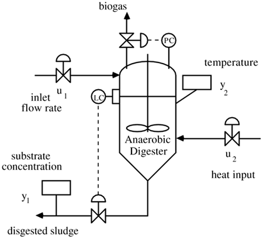

| [ Team LiB ] |
|
M14.5 Anaerobic Sludge DigesterAnaerobic sludge digesters are used to degrade compounds (in waste water that is high in suspended solids) to carbon dioxide and water. A schematic of an anaerobic digester is shown in Figure M14-5. Figure M14-5. Anaerobic digester. The level and pressure controllers are assumed to be perfect. The time unit is days, and the inputs and outputs have been scaled to cover the same ranges. The outputs and inputs are y1 = substrate concentration, y2 = temperature, u1 = inlet flow rate, and u2 = heat addition rate (°C/day). The steady-state inlet flow rate is 300 m3/day, the heat addition rate is 10°C /day. The steady-state temperature is 55°C and substrate concentration is 300 mg/liter. Besides considering setpoint responses, assume that disturbances in the inlet flow rate occur. |
| [ Team LiB ] |
|